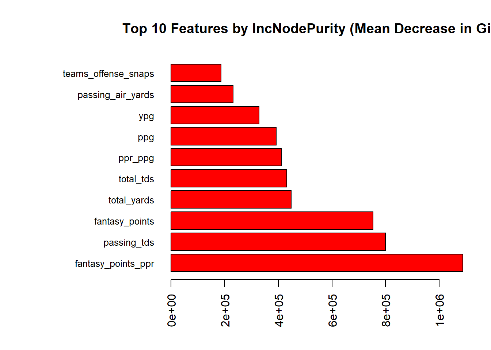

Chapter 16 NFL
16.1 WBs
## Rows: 5453 Columns: 76
## ── Column specification ────────────────────────────────────────────────────────
## Delimiter: ","
## chr (5): name, height_ft, position, team, season_type
## dbl (71): id, height_cm, season, completions, attempts, passing_yards, passi...
##
## ℹ Use `spec()` to retrieve the full column specification for this data.
## ℹ Specify the column types or set `show_col_types = FALSE` to quiet this message.names(data)[names(data) == "height_cm"] <- "height_in"
data <- data[, !names(data) %in% c("height_ft")]# Split the dataset by position
data_split <- split(data, data$position)
# Access the WR data
wr_data <- data_split$WR# Identify zero-variance columns
zero_var_cols <- nearZeroVar(wr_data)
# Check and remove zero-variance columns, excluding 'position'
zero_var_colnames <- colnames(wr_data)[zero_var_cols]
cols_to_keep <- names(wr_data)[!(names(wr_data) %in% zero_var_colnames) | names(wr_data) == "position"]
wr_data <- wr_data[, cols_to_keep]# Filter the data for the 2023 season to save it before we kill it
wr_2023 <- subset(wr_data, season == 2023)# Create new columns for the next season's fantasy points
wr_data$next_fantasy_points <- ave(wr_data$fantasy_points, wr_data$name, FUN = function(x) c(x[-1], NA))
wr_data$next_fantasy_points_ppr <- ave(wr_data$fantasy_points_ppr, wr_data$name, FUN = function(x) c(x[-1], NA))
# View the first few rows of the updated data
head(data)## # A tibble: 6 × 75
## id name height_in position team season season_type completions attempts
## <dbl> <chr> <dbl> <chr> <chr> <dbl> <chr> <dbl> <dbl>
## 1 1 A.J. B… 73 WR TEN 2019 REG 0 0
## 2 1 A.J. B… 72 WR TEN 2020 REG 0 0
## 3 1 A.J. B… 73 WR TEN 2021 REG 0 2
## 4 1 A.J. B… 73 WR PHI 2022 REG 0 0
## 5 1 A.J. B… 73 WR PHI 2023 REG 0 0
## 6 2 A.J. D… 77 TE DEN 2016 REG 0 0
## # ℹ 66 more variables: passing_yards <dbl>, passing_tds <dbl>,
## # interceptions <dbl>, sacks <dbl>, sack_yards <dbl>, sack_fumbles <dbl>,
## # sack_fumbles_lost <dbl>, passing_air_yards <dbl>,
## # passing_yards_after_catch <dbl>, passing_first_downs <dbl>,
## # passing_2pt_conversions <dbl>, carries <dbl>, rushing_yards <dbl>,
## # rushing_tds <dbl>, rushing_fumbles <dbl>, rushing_fumbles_lost <dbl>,
## # rushing_first_downs <dbl>, rushing_2pt_conversions <dbl>, …## id name
## 0 0
## height_in position
## 0 0
## team season
## 0 0
## attempts carries
## 0 0
## rushing_first_downs receptions
## 0 0
## targets receiving_yards
## 0 0
## receiving_tds receiving_fumbles
## 0 0
## receiving_fumbles_lost receiving_air_yards
## 0 0
## receiving_yards_after_catch receiving_first_downs
## 0 0
## receiving_2pt_conversions target_share
## 0 0
## air_yards_share fantasy_points
## 0 0
## fantasy_points_ppr total_yards
## 0 0
## games offense_snaps
## 0 0
## teams_offense_snaps ypc
## 0 0
## ypr touches
## 0 0
## rec_td_percentage total_tds
## 0 0
## td_percentage offense_pct
## 0 77
## rush_ypg rec_ypg
## 0 0
## ppg ppr_ppg
## 0 0
## yps ypg
## 4 0
## rookie_season round
## 0 0
## forty bench
## 0 0
## vertical years_played
## 0 0
## fp_ps ppr_fp_ps
## 2 2
## next_fantasy_points next_fantasy_points_ppr
## 675 675# For now, remove all rows with NAs
wr_data <- na.omit(wr_data)
# Drop the next_fantasy_points_ppr column
wr_data <- wr_data[, !names(wr_data) %in% "next_fantasy_points_ppr"]# Build Random Forest model
wrrf_model <- randomForest(next_fantasy_points ~ ., data = wr_data, ntree = 500, importance = TRUE)# Create a simplified dataset for linear regression
lm_data <- wr_data[, !names(wr_data) %in% c("name", "id", "position")]
# Initialize a vector to store RMSPE values for each run
rmspe <- c()
for(i in 1:10) {
# Resample the dataset with replacement
ind <- unique(sample(nrow(lm_data), nrow(lm_data), replace = TRUE))
train <- lm_data[ind, ]
test <- lm_data[-ind, ]
# Build Linear Regression model
lm_model <- lm(next_fantasy_points ~ ., data = train)
# Predict on the test data
yhat <- predict(lm_model, newdata = test)
# Calculate RMSPE
rmspe[i] <- sqrt(mean((test$next_fantasy_points - yhat)^2))
}## Warning in predict.lm(lm_model, newdata = test): prediction from rank-deficient
## fit; attr(*, "non-estim") has doubtful cases
## Warning in predict.lm(lm_model, newdata = test): prediction from rank-deficient
## fit; attr(*, "non-estim") has doubtful cases
## Warning in predict.lm(lm_model, newdata = test): prediction from rank-deficient
## fit; attr(*, "non-estim") has doubtful cases
## Warning in predict.lm(lm_model, newdata = test): prediction from rank-deficient
## fit; attr(*, "non-estim") has doubtful cases
## Warning in predict.lm(lm_model, newdata = test): prediction from rank-deficient
## fit; attr(*, "non-estim") has doubtful cases
## Warning in predict.lm(lm_model, newdata = test): prediction from rank-deficient
## fit; attr(*, "non-estim") has doubtful cases
## Warning in predict.lm(lm_model, newdata = test): prediction from rank-deficient
## fit; attr(*, "non-estim") has doubtful cases
## Warning in predict.lm(lm_model, newdata = test): prediction from rank-deficient
## fit; attr(*, "non-estim") has doubtful cases
## Warning in predict.lm(lm_model, newdata = test): prediction from rank-deficient
## fit; attr(*, "non-estim") has doubtful cases
## Warning in predict.lm(lm_model, newdata = test): prediction from rank-deficient
## fit; attr(*, "non-estim") has doubtful cases# Calculate the mean RMSPE over the 10 runs
mean_rmspe <- mean(rmspe)
print(paste("Mean RMSPE over 10 runs:", mean_rmspe))## [1] "Mean RMSPE over 10 runs: 41.3810107307706"## [1] 42.86088 40.23122 39.88330 41.61438 39.93325 39.26592 39.48694 46.47567
## [9] 41.58921 42.46933# Evaluate feature importance
importance_values <- importance(wrrf_model)
# Sort and extract the top 10 features by %IncMSE and IncNodePurity
top10_mse <- importance_values[order(importance_values[, "%IncMSE"], decreasing = TRUE), ][1:10, ]
top10_purity <- importance_values[order(importance_values[, "IncNodePurity"], decreasing = TRUE), ][1:10, ]
# Visualize top 10 features by %IncMSE
par(mar = c(5, 12, 4, 2)) # Increase margins for labels
barplot(top10_mse[, "%IncMSE"], names.arg = rownames(top10_mse),
main = "Top 10 Features by %IncMSE (Mean Decrease in Accuracy)",
las = 2, col = "blue", horiz = TRUE, cex.names = 0.8)# Visualize top 10 features by IncNodePurity
barplot(top10_purity[, "IncNodePurity"], names.arg = rownames(top10_purity),
main = "Top 10 Features by IncNodePurity (Mean Decrease in Gini)",
las = 2, col = "red", horiz = TRUE, cex.names = 0.8)oob_mse <- wrrf_model$mse[wrrf_model$ntree]
oobrmse <- sqrt(oob_mse)
# Print the OOB MSE
print(paste("OOB rMSE:", oobrmse))## [1] "OOB rMSE: 41.0136385880389"# Extract OOB predictions
oob_predictions <- wrrf_model$predicted
# Calculate the absolute errors
absolute_errors <- abs(oob_predictions - wrrf_model$y)
# Calculate the Mean Absolute Error (MAE)
oob_mae <- mean(absolute_errors)
# Print the OOB MAE
print(paste("OOB MAE:", oob_mae))## [1] "OOB MAE: 31.1016458934681"# Predict 2024 fantasy points for 2023 WRs
predicted_2024_fantasy_points <- predict(wrrf_model, newdata = wr_2023)
# Create a data frame with the names and the predicted 2024 fantasy points
results_wr <- data.frame(name = wr_2023$name, predicted_2024_fantasy_points = predicted_2024_fantasy_points)
print(results_wr)## name predicted_2024_fantasy_points
## 1 A.J. Brown 158.45374
## 2 A.T. Perry 46.98033
## 3 Adam Thielen 124.95694
## 4 Alec Pierce 68.77777
## 5 Alex Erickson 36.21638
## 6 Allen Lazard 46.50182
## 7 Allen Robinson 47.73667
## 8 Amari Cooper 131.86314
## 9 Amari Rodgers 26.28798
## 10 Amon-Ra St. Brown 191.46057
## 11 Andrei Iosivas 39.76441
## 12 Antoine Green 23.44094
## 13 Austin Trammell 18.70520
## 14 Ben Skowronek 19.05888
## 15 Bo Melton 66.26192
## 16 Brandin Cooks 107.72528
## 17 Brandon Aiyuk 146.09899
## 18 Brandon Johnson 44.25428
## 19 Brandon Powell 42.75481
## 20 Braxton Berrios 39.57019
## 21 Britain Covey 16.38348
## 22 Byron Pringle 29.09906
## 23 Calvin Austin 37.07823
## 24 Calvin Ridley 129.37458
## 25 Cedric Tillman 44.77454
## 26 CeeDee Lamb 178.42080
## 27 Charlie Jones 24.52458
## 28 Chase Claypool 13.44951
## 29 Chris Conley 54.77228
## 30 Chris Godwin 116.59863
## 31 Chris Moore 40.81207
## 32 Chris Olave 140.68480
## 33 Christian Kirk 94.48912
## 34 Christian Watson 79.16359
## 35 Cody Thompson 13.46552
## 36 Collin Johnson 11.60196
## 37 Colton Dowell 17.63330
## 38 Cooper Kupp 108.18179
## 39 Courtland Sutton 106.16625
## 40 Curtis Samuel 70.29533
## 41 D'Wayne Eskridge 16.81773
## 42 D.J. Chark NA
## 43 D.J. Montgomery 21.68741
## 44 D.J. Moore 147.79211
## 45 Darius Slayton 71.65614
## 46 Darnell Mooney 54.48127
## 47 Davante Adams 137.07375
## 48 David Bell 34.92270
## 49 David Moore 15.66785
## 50 DeAndre Carter 18.94561
## 51 DeAndre Hopkins 118.90245
## 52 Deebo Samuel 128.11221
## 53 Demarcus Robinson 55.84088
## 54 Demario Douglas 69.68733
## 55 Deonte Harty 22.67475
## 56 Derius Davis 33.21416
## 57 DeVante Parker 39.42930
## 58 Deven Thompkins 24.45811
## 59 Devin Duvernay 17.36587
## 60 DeVonta Smith 132.16115
## 61 Diontae Johnson 102.36024
## 62 DK Metcalf NA
## 63 Donovan Peoples-Jones 14.79269
## 64 Dontayvion Wicks 61.94750
## 65 Drake London 99.63021
## 66 Dyami Brown 33.08390
## 67 Elijah Cooks 15.59058
## 68 Elijah Moore 79.96089
## 69 Equanimeous St. Brown 13.00758
## 70 Erik Ezukanma 19.90174
## 71 Gabe Davis NA
## 72 Garrett Wilson 126.36224
## 73 George Pickens 119.40340
## 74 Greg Dortch 43.35514
## 75 Gunner Olszewski 22.09867
## 76 Hunter Renfrow 40.32242
## 77 Ihmir Smith-Marsette 26.83223
## 78 Irvin Charles 17.05696
## 79 Isaiah Hodgins 38.72475
## 80 Isaiah McKenzie 26.47391
## 81 Ja'Marr Chase 136.88921
## 82 Jahan Dotson 55.74635
## 83 Jake Bobo 36.70905
## 84 Jakobi Meyers 117.90660
## 85 Jalen Brooks 24.20460
## 86 Jalen Guyton 19.92515
## 87 Jalen Nailor 16.68614
## 88 Jalen Reagor 26.19103
## 89 Jalen Tolbert 43.54475
## 90 Jalin Hyatt 59.36283
## 91 Jamal Agnew 33.10912
## 92 James Proche 30.56557
## 93 Jameson Williams 50.67995
## 94 Jamison Crowder 32.64889
## 95 Jason Brownlee 26.17210
## 96 Jauan Jennings 35.18360
## 97 Jaxon Smith-Njigba 73.66326
## 98 Jayden Reed 130.41729
## 99 Jaylen Waddle 131.01759
## 100 Jerry Jeudy 75.48801
## 101 Jonathan Mingo 81.77836
## 102 Jordan Addison 122.30508
## 103 Josh Downs 86.53400
## 104 Josh Palmer 80.52307
## 105 Josh Reynolds 51.50464
## 106 JuJu Smith-Schuster 41.62285
## 107 Julio Jones 22.27734
## 108 Justin Jefferson 140.28859
## 109 Justin Watson 59.12881
## 110 Justyn Ross 16.03790
## 111 Juwann Winfree 15.22209
## 112 K.J. Osborn 46.32797
## 113 Kadarius Toney 44.20388
## 114 Kalif Raymond 52.16240
## 115 Kayshon Boutte 21.17600
## 116 Keelan Doss 19.44566
## 117 Keenan Allen 151.40707
## 118 Keith Kirkwood 13.54516
## 119 Kendrick Bourne 65.40660
## 120 KhaDarel Hodge 32.66039
## 121 Khalil Shakir 64.91994
## 122 Kwamie Lassiter NA
## 123 Kyle Philips 27.24527
## 124 Laquon Treadwell 20.44431
## 125 Laviska Shenault NA
## 126 Lil'Jordan Humphrey 34.63423
## 127 Lynn Bowden NA
## 128 Mack Hollins 33.64196
## 129 Malik Heath 31.86248
## 130 Malik Taylor 11.45799
## 131 Marquez Valdes-Scantling 48.29091
## 132 Marquise Brown 76.59450
## 133 Marquise Goodwin 25.12094
## 134 Marvin Jones 15.00472
## 135 Marvin Mims 58.58277
## 136 Mason Kinsey 16.65310
## 137 Mecole Hardman 28.69464
## 138 Michael Gallup 39.49602
## 139 Michael Pittman NA
## 140 Michael Thomas 47.17063
## 141 Michael Wilson 75.01664
## 142 Mike Evans 137.53211
## 143 Mike Strachan 19.72002
## 144 Mike Williams 70.02213
## 145 Miles Boykin 11.50276
## 146 Nelson Agholor 44.03776
## 147 Nick Westbrook-Ikhine 41.92132
## 148 Nico Collins 144.81428
## 149 Noah Brown 65.33498
## 150 Olamide Zaccheaus 30.22371
## 151 Parker Washington 29.45832
## 152 Parris Campbell 25.03521
## 153 Phillip Dorsett 25.38451
## 154 Puka Nacua 177.88186
## 155 Quentin Johnston 59.37848
## 156 Quez Watkins 33.41007
## 157 Rakim Jarrett 19.98260
## 158 Randall Cobb 24.41586
## 159 Rashee Rice 100.68511
## 160 Rashid Shaheed 87.59368
## 161 Rashod Bateman 58.97460
## 162 Ray-Ray McCloud 23.30915
## 163 Richie James 23.15227
## 164 River Cracraft 15.36569
## 165 Robbie Chosen 19.97650
## 166 Robert Woods 51.73724
## 167 Romeo Doubs 80.02505
## 168 Rondale Moore 56.61910
## 169 Ronnie Bell 31.29796
## 170 Samori Toure 21.76577
## 171 Scott Miller 30.93037
## 172 Shedrick Jackson 18.44799
## 173 Simi Fehoko 18.43777
## 174 Skyy Moore 34.11112
## 175 Stefon Diggs 136.06008
## 176 Sterling Shepard 25.60539
## 177 Steven Sims 17.01397
## 178 Tank Dell 131.24927
## 179 Tee Higgins 87.99714
## 180 Terrace Marshall NA
## 181 Terry McLaurin 108.34191
## 182 Tim Jones 31.20877
## 183 Tre Tucker 59.63487
## 184 Trent Sherfield 20.57037
## 185 Trent Taylor 19.45240
## 186 Trenton Irwin 34.80355
## 187 Trey Palmer 62.84441
## 188 Treylon Burks 52.32640
## 189 Trishton Jackson 15.53072
## 190 Tutu Atwell 56.67214
## 191 Ty Montgomery 15.31157
## 192 Tylan Wallace 14.89528
## 193 Tyler Boyd 58.06943
## 194 Tyler Johnson 19.57512
## 195 Tyler Lockett 92.65408
## 196 Tyler Scott 35.43359
## 197 Tyquan Thornton 25.36256
## 198 Tyreek Hill 194.43879
## 199 Van Jefferson 41.56438
## 200 Velus Jones NA
## 201 Wan'Dale Robinson 67.81444
## 202 Willie Snead 12.65379
## 203 Xavier Gipson 44.94178
## 204 Xavier Hutchinson 35.47533
## 205 Zach Pascal 24.39360
## 206 Zay Flowers 113.21412
## 207 Zay Jones 60.16770mse of specific seasons? we need to factor in the qbs and teamates of the players
16.2 RBs
# Identify zero-variance columns
zero_var_cols <- nearZeroVar(rb_data)
# Check and remove zero-variance columns, excluding 'position'
zero_var_colnames <- colnames(rb_data)[zero_var_cols]
cols_to_keep <- names(rb_data)[!(names(rb_data) %in% zero_var_colnames) | names(rb_data) == "position"]
rb_data <- rb_data[, cols_to_keep]
rb_2023 <- subset(rb_data, season == 2023)# Create new columns for the next season's fantasy points
rb_data$next_fantasy_points <- ave(rb_data$fantasy_points, rb_data$name, FUN = function(x) c(x[-1], NA))
rb_data$next_fantasy_points_ppr <- ave(rb_data$fantasy_points_ppr, rb_data$name, FUN = function(x) c(x[-1], NA))
# View the first few rows of the updated data
head(rb_data)## # A tibble: 6 × 55
## id name height_in position team season carries rushing_yards rushing_tds
## <dbl> <chr> <dbl> <chr> <chr> <dbl> <dbl> <dbl> <dbl>
## 1 3 A.J. … 72 RB GB 2020 46 242 2
## 2 3 A.J. … 72 RB GB 2021 187 803 5
## 3 3 A.J. … 72 RB GB 2022 186 770 7
## 4 10 Aaron… 69 RB GB 2017 81 448 4
## 5 10 Aaron… 69 RB GB 2018 133 728 8
## 6 10 Aaron… 69 RB GB 2019 236 1084 16
## # ℹ 46 more variables: rushing_fumbles <dbl>, rushing_fumbles_lost <dbl>,
## # rushing_first_downs <dbl>, rushing_2pt_conversions <dbl>, receptions <dbl>,
## # targets <dbl>, receiving_yards <dbl>, receiving_tds <dbl>,
## # receiving_fumbles <dbl>, receiving_fumbles_lost <dbl>,
## # receiving_air_yards <dbl>, receiving_yards_after_catch <dbl>,
## # receiving_first_downs <dbl>, target_share <dbl>, air_yards_share <dbl>,
## # fantasy_points <dbl>, fantasy_points_ppr <dbl>, total_yards <dbl>, …## id name
## 0 0
## height_in position
## 0 0
## team season
## 0 0
## carries rushing_yards
## 0 0
## rushing_tds rushing_fumbles
## 0 0
## rushing_fumbles_lost rushing_first_downs
## 0 0
## rushing_2pt_conversions receptions
## 0 0
## targets receiving_yards
## 0 0
## receiving_tds receiving_fumbles
## 0 0
## receiving_fumbles_lost receiving_air_yards
## 0 0
## receiving_yards_after_catch receiving_first_downs
## 0 0
## target_share air_yards_share
## 0 0
## fantasy_points fantasy_points_ppr
## 0 0
## total_yards games
## 0 0
## offense_snaps teams_offense_snaps
## 0 0
## ypc ypr
## 0 0
## touches rush_td_percentage
## 0 0
## rec_td_percentage total_tds
## 0 0
## td_percentage offense_pct
## 0 50
## rush_ypg rec_ypg
## 0 0
## ppg ppr_ppg
## 0 0
## yps ypg
## 0 0
## rookie_season round
## 0 0
## overall forty
## 0 0
## bench vertical
## 0 0
## years_played fp_ps
## 0 0
## ppr_fp_ps next_fantasy_points
## 0 429
## next_fantasy_points_ppr
## 429# For now, remove all rows with NAs
rb_data <- na.omit(rb_data)
# Drop the next_fantasy_points_ppr column
rb_data <- rb_data[, !names(rb_data) %in% "next_fantasy_points_ppr"]# Build Random Forest model
rbrf_model <- randomForest(next_fantasy_points ~ ., data = rb_data, ntree = 500, importance = TRUE)# Create a simplified dataset for linear regression
lm_data <- rb_data[, !names(rb_data) %in% c("name", "id", "position")]
# Initialize a vector to store RMSPE values for each run
rmspe <- c()
for(i in 1:10) {
# Resample the dataset with replacement
ind <- unique(sample(nrow(lm_data), nrow(lm_data), replace = TRUE))
train <- lm_data[ind, ]
test <- lm_data[-ind, ]
# Build Linear Regression model
lm_model <- lm(next_fantasy_points ~ ., data = train)
# Predict on the test data
yhat <- predict(lm_model, newdata = test)
# Calculate RMSPE
rmspe[i] <- sqrt(mean((test$next_fantasy_points - yhat)^2))
}## Warning in predict.lm(lm_model, newdata = test): prediction from rank-deficient
## fit; attr(*, "non-estim") has doubtful cases
## Warning in predict.lm(lm_model, newdata = test): prediction from rank-deficient
## fit; attr(*, "non-estim") has doubtful cases
## Warning in predict.lm(lm_model, newdata = test): prediction from rank-deficient
## fit; attr(*, "non-estim") has doubtful cases
## Warning in predict.lm(lm_model, newdata = test): prediction from rank-deficient
## fit; attr(*, "non-estim") has doubtful cases
## Warning in predict.lm(lm_model, newdata = test): prediction from rank-deficient
## fit; attr(*, "non-estim") has doubtful cases
## Warning in predict.lm(lm_model, newdata = test): prediction from rank-deficient
## fit; attr(*, "non-estim") has doubtful cases
## Warning in predict.lm(lm_model, newdata = test): prediction from rank-deficient
## fit; attr(*, "non-estim") has doubtful cases
## Warning in predict.lm(lm_model, newdata = test): prediction from rank-deficient
## fit; attr(*, "non-estim") has doubtful cases
## Warning in predict.lm(lm_model, newdata = test): prediction from rank-deficient
## fit; attr(*, "non-estim") has doubtful cases
## Warning in predict.lm(lm_model, newdata = test): prediction from rank-deficient
## fit; attr(*, "non-estim") has doubtful cases# Calculate the mean RMSPE over the 10 runs
mean_rmspe <- mean(rmspe)
print(paste("Mean RMSPE over 10 runs:", mean_rmspe))## [1] "Mean RMSPE over 10 runs: 60.7854844772501"## [1] 63.79008 60.63969 62.23519 60.39532 61.30245 62.32508 57.03457 56.46881
## [9] 60.45813 63.20552# Evaluate feature importance
importance_values <- importance(rbrf_model)
# Sort and extract the top 10 features by %IncMSE and IncNodePurity
top10_mse <- importance_values[order(importance_values[, "%IncMSE"], decreasing = TRUE), ][1:10, ]
top10_purity <- importance_values[order(importance_values[, "IncNodePurity"], decreasing = TRUE), ][1:10, ]
# Visualize top 10 features by %IncMSE
par(mar = c(5, 12, 4, 2)) # Increase margins for labels
barplot(top10_mse[, "%IncMSE"], names.arg = rownames(top10_mse),
main = "Top 10 Features by %IncMSE (Mean Decrease in Accuracy)",
las = 2, col = "blue", horiz = TRUE, cex.names = 0.8)# Visualize top 10 features by IncNodePurity
barplot(top10_purity[, "IncNodePurity"], names.arg = rownames(top10_purity),
main = "Top 10 Features by IncNodePurity (Mean Decrease in Gini)",
las = 2, col = "red", horiz = TRUE, cex.names = 0.8)# Calculate OOB MAE
# Extract OOB predictions
oob_predictions <- rbrf_model$predicted
# Calculate the absolute errors
absolute_errors <- abs(oob_predictions - rbrf_model$y)
# Calculate the Mean Absolute Error (MAE)
oob_mae <- mean(absolute_errors)
print(paste("OOB MAE:", oob_mae))## [1] "OOB MAE: 42.8327659290246"# Predict 2024 fantasy points for 2023 RBs
predicted_2024_fantasy_points <- predict(rbrf_model, newdata = rb_2023)
# Create a data frame with the names and the predicted 2024 fantasy points
results_rb <- data.frame(name = rb_2023$name, predicted_2024_fantasy_points = predicted_2024_fantasy_points)
print(results_rb)## name predicted_2024_fantasy_points
## 1 Aaron Jones 118.04262
## 2 Alex Armah 25.09065
## 3 Alexander Mattison 84.97637
## 4 Alvin Kamara 166.35528
## 5 Ameer Abdullah 48.34743
## 6 Anthony McFarland NA
## 7 Antonio Gibson 68.02155
## 8 Austin Ekeler 152.20587
## 9 Bijan Robinson 136.79453
## 10 Boston Scott 17.78374
## 11 Brandon Bolden 50.07336
## 12 Breece Hall 155.01342
## 13 Brian Robinson NA
## 14 Cam Akers 39.38520
## 15 Chase Brown 80.88865
## 16 Chase Edmonds 53.12924
## 17 Chris Evans 50.61122
## 18 Chris Rodriguez 59.85606
## 19 Christian McCaffrey 212.77041
## 20 Chuba Hubbard 110.80196
## 21 Clyde Edwards-Helaire 52.44498
## 22 Cordarrelle Patterson 36.70601
## 23 Craig Reynolds 36.41821
## 24 D'Andre Swift 118.47322
## 25 D'Ernest Johnson 32.30104
## 26 D'Onta Foreman 58.50286
## 27 Dameon Pierce 82.89876
## 28 Damien Harris 23.31411
## 29 Damien Williams 21.62917
## 30 Dare Ogunbowale 42.97832
## 31 Darrell Henderson 54.02835
## 32 Darrynton Evans 39.19007
## 33 David Montgomery 129.91948
## 34 DeeJay Dallas 33.84922
## 35 Deon Jackson 40.77150
## 36 Derrick Gore 44.56223
## 37 Derrick Henry 129.12637
## 38 Deuce Vaughn 27.40912
## 39 Devin Singletary 111.36104
## 40 Devine Ozigbo 12.63288
## 41 Elijah Dotson 26.75654
## 42 Elijah Mitchell 50.35636
## 43 Emanuel Wilson 22.55430
## 44 Emari Demercado 70.48332
## 45 Eric Gray 27.81213
## 46 Evan Hull 37.88231
## 47 Ezekiel Elliott 88.84338
## 48 Gary Brightwell 22.48163
## 49 Gus Edwards 102.98812
## 50 Hunter Luepke 23.78956
## 51 Isaiah Spiller 32.32182
## 52 Isiah Pacheco 155.74796
## 53 Israel Abanikanda 23.44183
## 54 J.K. Dobbins 47.20577
## 55 Jahmyr Gibbs 169.47437
## 56 Jaleel McLaughlin 113.92307
## 57 Jamaal Williams 43.21933
## 58 James Conner 141.83972
## 59 James Cook 123.57604
## 60 Jashaun Corbin 37.93056
## 61 Javonte Williams 93.81538
## 62 Jaylen Warren 120.62452
## 63 Jerick McKinnon 63.07916
## 64 Jerome Ford 114.49215
## 65 Joe Mixon 152.96433
## 66 Jonathan Taylor 139.61376
## 67 Jonathan Ward 22.94492
## 68 Jonathan Williams 54.93015
## 69 Jordan Mason 51.34162
## 70 Jordan Mims 49.01447
## 71 Josh Jacobs 159.46634
## 72 Joshua Kelley 65.14497
## 73 Justice Hill 65.55675
## 74 Kareem Hunt 64.13019
## 75 Keaton Mitchell 87.22186
## 76 Kendre Miller 57.41223
## 77 Kene Nwangwu 15.80442
## 78 Kenneth Gainwell 67.31551
## 79 Kenneth Walker NA
## 80 Kenyan Drake 42.61243
## 81 Kevin Harris 31.02931
## 82 Khalil Herbert 77.41246
## 83 Kyren Williams 173.44194
## 84 La'Mical Perine 41.98330
## 85 Latavius Murray 58.62617
## 86 Leonard Fournette 44.06344
## 87 Matt Breida 39.62983
## 88 Melvin Gordon 29.20249
## 89 Michael Carter 45.15985
## 90 Miles Sanders 67.67319
## 91 Najee Harris 103.52405
## 92 Nick Chubb 65.56131
## 93 Patrick Taylor 43.48695
## 94 Pierre Strong 69.88942
## 95 Rachaad White 153.88568
## 96 Raheem Blackshear 15.10576
## 97 Raheem Mostert 144.29180
## 98 Rashaad Penny 26.38452
## 99 Rhamondre Stevenson 133.91477
## 100 Rico Dowdle 81.54722
## 101 Ronnie Rivers 47.11891
## 102 Roschon Johnson 101.38723
## 103 Royce Freeman 48.34645
## 104 Salvon Ahmed 26.08709
## 105 Samaje Perine 72.79172
## 106 Saquon Barkley 137.55416
## 107 Sean Tucker 21.35669
## 108 Tank Bigsby 74.38335
## 109 Tony Jones 29.54301
## 110 Tony Pollard 143.83668
## 111 Travis Etienne 159.74291
## 112 Travis Homer 44.79461
## 113 Trayveon Williams 47.70385
## 114 Trey Sermon 42.27016
## 115 Ty Chandler 87.44841
## 116 Ty Johnson 31.38996
## 117 Tyjae Spears 114.03370
## 118 Tyler Allgeier 111.67694
## 119 Tyler Goodson 30.34336
## 120 Tyrion Davis-Price 49.65526
## 121 Zach Charbonnet 113.75264
## 122 Zach Evans 39.63292
## 123 Zack Moss 91.01460
## 124 Zamir White 88.6130716.3 QBs
# Identify zero-variance columns
zero_var_cols <- nearZeroVar(qb_data)
# Check and remove zero-variance columns
zero_var_colnames <- colnames(qb_data)[zero_var_cols]
qb_data <- qb_data[, !names(qb_data) %in% zero_var_colnames]
# Filter the data for the 2023 season
qb_2023 <- subset(qb_data, season == 2023)
# Create new columns for the next season's fantasy points
qb_data$next_fantasy_points <- ave(qb_data$fantasy_points, qb_data$name, FUN = function(x) c(x[-1], NA))
# Remove rows where rookie_season is 0
qb_data <- qb_data[qb_data$rookie_season != 0, ]
# Remove rows with NAs
qb_data <- na.omit(qb_data)# Build Random Forest model
qbrf_model <- randomForest(next_fantasy_points ~ ., data = qb_data, ntree = 500, importance = TRUE)# Evaluate feature importance
importance_values <- importance(qbrf_model)
# Sort and extract the top 10 features by %IncMSE and IncNodePurity
top10_mse <- importance_values[order(importance_values[, "%IncMSE"], decreasing = TRUE), ][1:10, ]
top10_purity <- importance_values[order(importance_values[, "IncNodePurity"], decreasing = TRUE), ][1:10, ]
# Visualize top 10 features by %IncMSE
par(mar = c(5, 12, 4, 2)) # Increase margins for labels
barplot(top10_mse[, "%IncMSE"], names.arg = rownames(top10_mse),
main = "Top 10 Features by %IncMSE (Mean Decrease in Accuracy)",
las = 2, col = "blue", horiz = TRUE, cex.names = 0.8)
# Visualize top 10 features by IncNodePurity
barplot(top10_purity[, "IncNodePurity"], names.arg = rownames(top10_purity),
main = "Top 10 Features by IncNodePurity (Mean Decrease in Gini)",
las = 2, col = "red", horiz = TRUE, cex.names = 0.8)
# Calculate OOB rmse
oob_rmse <- sqrt(qbrf_model$mse[qbrf_model$ntree])
# Extract OOB predictions
oob_predictions <- qbrf_model$predicted
# Calculate the absolute errors
absolute_errors <- abs(oob_predictions - qbrf_model$y)
# Calculate the Mean Absolute Error (MAE)
oob_mae <- mean(absolute_errors)
print(paste("OOB MAE:", oob_mae))## [1] "OOB MAE: 61.9047808581408"## [1] 82.62143# Predict 2024 fantasy points for 2023 QBs
predicted_2024_fantasy_points <- predict(qbrf_model, newdata = qb_2023)
# Create a data frame with the names and the predicted 2024 fantasy points
results_qb <- data.frame(name = qb_2023$name, predicted_2024_fantasy_points = predicted_2024_fantasy_points)
print(head(results_qb))## name predicted_2024_fantasy_points
## 1 Aaron Rodgers 82.75772
## 2 Aidan O'Connell 131.55928
## 3 AJ McCarron NA
## 4 Andy Dalton 89.99066
## 5 Anthony Richardson 148.35138
## 6 Bailey Zappe 129.8282616.4 Plots and Analysis
# For QB model (qbrf_model)
pdp_qb_games <- partial(qbrf_model, pred.var = "games", plot = TRUE,
main = "PDP for Games (QB Random Forest Model)",
xlab = "Games", ylab = "Partial Dependence")
# For WR model (wrrf_model)
pdp_wr_games <- partial(wrrf_model, pred.var = "games", plot = TRUE,
main = "PDP for Games (WR Random Forest Model)",
xlab = "Games", ylab = "Partial Dependence")
# For RB model (rbrf_model)
pdp_rb_games <- partial(rbrf_model, pred.var = "games", plot = TRUE,
main = "PDP for Games (RB Random Forest Model)",
xlab = "Games", ylab = "Partial Dependence")
pdp_qb_games


Games played is being tracked by other statistics… i dont give a crap about games played i only care about your stats at the end of the season…
16.5 Lists to do
need to look at if multiple years back is good idea(i dont think so because then can no use 2nd yr players), and to be able to add teamates. also look if we are good for the seasons that there are 17 games. break the seasons down into quarters.
16.6 team mates
## Warning: package 'nflfastR' was built under R version 4.3.3# Fetch rosters for 2024
rosters <- fast_scraper_roster(season = 2024)
# Filter WR and RB positions
wr_rosters <- rosters %>% filter(position == "WR")
rb_rosters <- rosters %>% filter(position == "RB")
# Rename columns to match merging requirements
colnames(wr_2023)[colnames(wr_2023) == "team.x"] <- "team"
colnames(rb_2023)[colnames(rb_2023) == "team.x"] <- "team"
# Merge WR data with rosters
wr_teams <- merge(wr_2023, wr_rosters, by.x = "name", by.y = "full_name", all.x = TRUE)
colnames(wr_teams)[colnames(wr_teams) == "team.x"] <- "team" # Use team.x for original team
colnames(wr_teams)[colnames(wr_teams) == "team.y"] <- "new_team" # Use team.y for updated team
wr_teams <- wr_teams[, c("name", "team")]
# Merge RB data with rosters
rb_teams <- merge(rb_2023, rb_rosters, by.x = "name", by.y = "full_name", all.x = TRUE)
colnames(rb_teams)[colnames(rb_teams) == "team.x"] <- "team" # Use team.x for original team
colnames(rb_teams)[colnames(rb_teams) == "team.y"] <- "new_team" # Use team.y for updated team
rb_teams <- rb_teams[, c("name", "team")]create wr_2023-2024 that has the 2023 stats that have the players on there correct teams. we will do the same for the rb data
# Load the necessary libraries
library(readr)
library(randomForest)
library(caret)
library(tidyr)
library(pdp)
library(dplyr)
library(nflfastR)
# Load the offensive yearly data
data <- read_csv("offense_yearly_data.csv")## Rows: 5453 Columns: 76
## ── Column specification ────────────────────────────────────────────────────────
## Delimiter: ","
## chr (5): name, height_ft, position, team, season_type
## dbl (71): id, height_cm, season, completions, attempts, passing_yards, passi...
##
## ℹ Use `spec()` to retrieve the full column specification for this data.
## ℹ Specify the column types or set `show_col_types = FALSE` to quiet this message.# Sort the dataset by player name and season
data <- data[order(data$name, data$season), ]
# Adjust columns
names(data)[names(data) == "height_cm"] <- "height_in"
data <- data[, !names(data) %in% c("height_ft")]
# Split the dataset by position
data_split <- split(data, data$position)
# Access the WR and RB data
wr_data <- data_split$WR
rb_data <- data_split$RB
# Identify zero-variance columns and remove them, excluding 'position'
# For WR data
zero_var_cols_wr <- nearZeroVar(wr_data)
zero_var_colnames_wr <- colnames(wr_data)[zero_var_cols_wr]
cols_to_remove_wr <- zero_var_colnames_wr[zero_var_colnames_wr != "position"]
wr_data <- wr_data[, !names(wr_data) %in% cols_to_remove_wr]
# For RB data
zero_var_cols_rb <- nearZeroVar(rb_data)
zero_var_colnames_rb <- colnames(rb_data)[zero_var_cols_rb]
cols_to_remove_rb <- zero_var_colnames_rb[zero_var_colnames_rb != "position"]
rb_data <- rb_data[, !names(rb_data) %in% cols_to_remove_rb]
# Assuming the previous steps up to filtering the 2023 data are done
# Filter the data for the 2023 season
wr_2023 <- subset(wr_data, season == 2023)
rb_2023 <- subset(rb_data, season == 2023)
# Fetch current rosters for 2024
rosters <- fast_scraper_roster(season = 2024)
wr_rosters <- rosters %>% filter(position == "WR")
rb_rosters <- rosters %>% filter(position == "RB")
# For WR data
wr_rosters_temp <- wr_rosters[, c("full_name", "team")]
names(wr_rosters_temp)[names(wr_rosters_temp) == "team"] <- "team_roster"
wr_2023_2024 <- merge(wr_2023, wr_rosters_temp, by.x = "name", by.y = "full_name", all.x = TRUE)
# Replace NA in team with team_roster if available
wr_2023_2024$team <- ifelse(is.na(wr_2023_2024$team_roster),
wr_2023_2024$team,
wr_2023_2024$team_roster)
wr_2023_2024 <- wr_2023_2024[, !names(wr_2023_2024) %in% "team_roster"]
# For RB data
rb_rosters_temp <- rb_rosters[, c("full_name", "team")]
names(rb_rosters_temp)[names(rb_rosters_temp) == "team"] <- "team_roster"
rb_2023_2024 <- merge(rb_2023, rb_rosters_temp, by.x = "name", by.y = "full_name", all.x = TRUE)
# Replace NA in team with team_roster if available
rb_2023_2024$team <- ifelse(is.na(rb_2023_2024$team_roster),
rb_2023_2024$team,
rb_2023_2024$team_roster)
rb_2023_2024 <- rb_2023_2024[, !names(rb_2023_2024) %in% "team_roster"]
# Now, wr_2023_2024 and rb_2023_2024 should have the correct teams for the players in 2023, with fallback to original team if NA.now in wr_data and rb we need to look to include teamate stats. (we will group them for the 2023/2024 one later) we will create collums that have a the teamates states. to determine a teamate use the team and the season… now we obviously cant use every teamate. so for now we wil use the best qb on that team the 2 best wrs(that isnt themselves) and the best rb… now we have to determine what best is. best for qb will be pass yards. best for rbs will be rush yards. and best for wrs will be receving yards we may need to restructure it from the begining a bit because some colloms where dropped but u figure that out
# Load the necessary libraries
library(readr)
library(dplyr)
library(tidyr)
# Load the offensive yearly data
data <- read_csv("offense_yearly_data.csv")## Rows: 5453 Columns: 76
## ── Column specification ────────────────────────────────────────────────────────
## Delimiter: ","
## chr (5): name, height_ft, position, team, season_type
## dbl (71): id, height_cm, season, completions, attempts, passing_yards, passi...
##
## ℹ Use `spec()` to retrieve the full column specification for this data.
## ℹ Specify the column types or set `show_col_types = FALSE` to quiet this message.# Sort the dataset by player name and season
data <- data[order(data$name, data$season), ]
# Adjust columns
names(data)[names(data) == "height_cm"] <- "height_in" # Rename column
data <- data[, !names(data) %in% "height_ft"] # Remove height_ft column
# Split the dataset by position
data_split <- split(data, data$position)
# Access the WR, RB, and QB data
wr_data <- data_split$WR
rb_data <- data_split$RB
qb_data <- data_split$QB
# Load the necessary libraries
library(readr)
library(dplyr)
# Load the offensive yearly data
data <- read_csv("offense_yearly_data.csv")## Rows: 5453 Columns: 76
## ── Column specification ────────────────────────────────────────────────────────
## Delimiter: ","
## chr (5): name, height_ft, position, team, season_type
## dbl (71): id, height_cm, season, completions, attempts, passing_yards, passi...
##
## ℹ Use `spec()` to retrieve the full column specification for this data.
## ℹ Specify the column types or set `show_col_types = FALSE` to quiet this message.# Group by season and team to get a column with the names of all team members
get_team_members <- function(data) {
data %>%
group_by(season, team) %>%
summarise(team_members = paste(name, collapse = ", ")) %>%
ungroup()
}
# Apply the function to WR, RB, and QB data
wr_team_members <- get_team_members(data_split$WR)## `summarise()` has grouped output by 'season'. You can override using the
## `.groups` argument.## `summarise()` has grouped output by 'season'. You can override using the
## `.groups` argument.## `summarise()` has grouped output by 'season'. You can override using the
## `.groups` argument.# Function to get team members
get_team_members <- function(data) {
data %>%
group_by(season, team) %>%
summarise(team_members = paste(name, collapse = ", ")) %>%
ungroup()
}
# Apply the function to existing data
wr_team_members <- get_team_members(data_split$WR)## `summarise()` has grouped output by 'season'. You can override using the
## `.groups` argument.## `summarise()` has grouped output by 'season'. You can override using the
## `.groups` argument.## `summarise()` has grouped output by 'season'. You can override using the
## `.groups` argument.# Function to get top WRs by team
get_top_wr_team_members <- function(ranked_wr_data) {
# Sort data
ranked_wr_data <- ranked_wr_data[order(ranked_wr_data$season,
ranked_wr_data$team,
ranked_wr_data$rank), ]
# Function to get nth value safely
get_nth <- function(x, n) {
if(length(x) >= n) return(x[n])
return(NA)
}
# Split data by season and team
split_data <- split(ranked_wr_data,
list(ranked_wr_data$season, ranked_wr_data$team))
# Create result data frame
result_list <- lapply(split_data, function(group) {
# If the group is empty, return NULL
if (nrow(group) == 0) {
return(NULL)
}
data.frame(
season = unique(group$season),
team = unique(group$team),
WR1_name = get_nth(group$name, 1),
WR1_yards = get_nth(group$receiving_yards, 1),
WR2_name = get_nth(group$name, 2),
WR2_yards = get_nth(group$receiving_yards, 2),
WR3_name = get_nth(group$name, 3),
WR3_yards = get_nth(group$receiving_yards, 3),
WR4_name = get_nth(group$name, 4),
WR4_yards = get_nth(group$receiving_yards, 4),
WR5_name = get_nth(group$name, 5),
WR5_yards = get_nth(group$receiving_yards, 5),
stringsAsFactors = FALSE
)
})
# Filter out NULL entries
result_list <- Filter(Negate(is.null), result_list)
# Combine all data frames into one
result <- do.call(rbind, result_list)
# Create team_key
result$team_key <- paste(result$team, result$season, sep = "_")
# Reorder columns
col_order <- c("team_key", "season", "team",
names(result)[!names(result) %in% c("team_key", "season", "team")])
result <- result[, col_order]
rownames(result) <- NULL
return(result)
}
# Create a function to calculate dense rank
dense_rank_desc <- function(x) {
# Sort unique values in descending order
sorted_unique <- sort(unique(x), decreasing = TRUE)
# Create rank mapping
rank_map <- seq_along(sorted_unique)
names(rank_map) <- sorted_unique
# Return ranks
rank_map[as.character(x)]
}
# Split data by season and team
splits <- split(wr_data, list(wr_data$season, wr_data$team))
# Function to process each group
process_group <- function(group) {
if(nrow(group) == 0) return(NULL)
# Calculate rank within group
group$rank <- dense_rank_desc(group$receiving_yards)
# Select only needed columns
cols_to_keep <- c("season", "team", "name", "receiving_yards", "rank")
group <- group[, cols_to_keep[cols_to_keep %in% names(group)]]
return(group)
}
# Apply processing to each group and combine results
ranked_wr_data <- do.call(rbind, lapply(splits, process_group))
# Reset row names
rownames(ranked_wr_data) <- NULL
# Create WR summary
wr_summary <- get_top_wr_team_members(ranked_wr_data)
# Check structure
str(wr_summary)## 'data.frame': 326 obs. of 13 variables:
## $ team_key : chr "ARI_2016" "ARI_2017" "ARI_2018" "ARI_2019" ...
## $ season : num 2016 2017 2018 2019 2020 ...
## $ team : chr "ARI" "ARI" "ARI" "ARI" ...
## $ WR1_name : chr "Larry Fitzgerald" "Larry Fitzgerald" "Larry Fitzgerald" "Larry Fitzgerald" ...
## $ WR1_yards: num 1023 1156 734 804 1407 ...
## $ WR2_name : chr "J.J. Nelson" "J.J. Nelson" "Christian Kirk" "Christian Kirk" ...
## $ WR2_yards: num 568 508 590 709 621 848 709 565 711 921 ...
## $ WR3_name : chr "John Brown" "Jaron Brown" "Trent Sherfield" "Damiere Byrd" ...
## $ WR3_yards: num 517 477 210 359 409 572 467 352 580 556 ...
## $ WR4_name : chr "Jaron Brown" "John Brown" "Chad Williams" "Pharoh Cooper" ...
## $ WR4_yards: num 187 299 171 243 224 435 414 280 210 504 ...
## $ WR5_name : chr "Brittan Golden" "Brittan Golden" "J.J. Nelson" "Andy Isabella" ...
## $ WR5_yards: num 82 70 64 189 173 208 236 19 12 102 ...16.7 Testing
# Create team_key and merge with wr_summary
wr_data_final <- wr_data
wr_data_final$team_key <- paste(wr_data_final$team, wr_data_final$season, sep = "_")
wr_data_final <- merge(wr_data_final, wr_summary, by = "team_key", all.x = TRUE)
# Rename columns and create initial wr_dataf
wr_dataf <- wr_data_final
names(wr_dataf)[names(wr_dataf) == "season.x"] <- "season"
names(wr_dataf)[names(wr_dataf) == "team.x"] <- "team"
names(wr_dataf)[names(wr_dataf) == "name"] <- "player_name"
# Remove ID column if it exists
if("id" %in% names(wr_dataf)) {
wr_dataf <- wr_dataf[, !names(wr_dataf) == "id"]
}
# Subset 2023 data
wr_2023 <- wr_dataf[wr_dataf$season == 2023, ]
# Create next season's fantasy points
create_next_points <- function(points, player) {
ave(points, player, FUN = function(x) c(x[-1], NA))
}
wr_dataf$next_fantasy_points <- create_next_points(wr_dataf$fantasy_points, wr_dataf$player_name)
wr_dataf$next_fantasy_points_ppr <- create_next_points(wr_dataf$fantasy_points_ppr, wr_dataf$player_name)
# Filter rookie seasons
wr_dataf <- wr_dataf[wr_dataf$rookie_season != 0, ]
wr_dataf <- wr_dataf[wr_dataf$rookie_season != wr_dataf$season, ]
# Remove next_fantasy_points_ppr
wr_dataf$next_fantasy_points_ppr <- NULL
# Remove zero-variance columns
n_distinct <- function(x) length(unique(x))
zero_var_cols <- names(wr_dataf)[sapply(wr_dataf, n_distinct) == 1]
wr_dataf <- wr_dataf[, !names(wr_dataf) %in% zero_var_cols]
# Remove non-predictive columns
columns_to_remove <- c("player_name", "team_key", "WR2_name", "WR1_name",
"RB3_name", "RB2_name", "RB1_name", "QB_name",
"season", "team", "season.y", "team.y")
wr_dataf <- wr_dataf[, !names(wr_dataf) %in% columns_to_remove]
# Train Random Forest model
rf_model <- randomForest(next_fantasy_points ~ .,
ntree = 1200,
data = wr_dataf,
importance = TRUE,
na.action = na.omit)
# Calculate performance metrics
oob_predictions <- rf_model$predicted
absolute_errors <- abs(oob_predictions - rf_model$y)
oob_mae <- mean(absolute_errors)
oob_mse <- rf_model$mse[1200]
oobrmse <- sqrt(oob_mse)
# Print metrics
print(paste("OOB MAE:", oob_mae))## [1] "OOB MAE: 33.185773344464"## [1] "OOB rMSE: 43.5526590552396"# Feature importance
importance_values <- importance(rf_model)
ordered_importance <- order(importance_values[, "%IncMSE"], decreasing = TRUE)
top10_mse <- importance_values[ordered_importance[1:10], ]
# Plot importance
par(mar = c(5, 12, 4, 2))
barplot(top10_mse[, "%IncMSE"],
names.arg = rownames(top10_mse),
main = "Top 10 Features by %IncMSE (Enhanced Model)",
las = 2,
col = "blue",
horiz = TRUE,
cex.names = 0.8)
# Save player names and clean 2023 data
nms <- wr_2023$player_name
wr_2023 <- wr_2023[, !names(wr_2023) %in% c(zero_var_cols, columns_to_remove)]
# Generate predictions
predicted_2024_fantasy_points <- predict(rf_model, newdata = wr_2023)
# Create and sort results
results_wr <- data.frame(
name = nms,
predicted_2024_fantasy_points = predicted_2024_fantasy_points
)
results_wr <- results_wr[order(results_wr$predicted_2024_fantasy_points, decreasing = TRUE), ]
# Print predictions
print("2024 WR Predictions (Enhanced Model):")## [1] "2024 WR Predictions (Enhanced Model):"## name predicted_2024_fantasy_points
## 1243 Tyreek Hill 185.162621
## 709 Amon-Ra St. Brown 181.902197
## 571 CeeDee Lamb 176.375749
## 1104 Puka Nacua 173.810705
## 1667 A.J. Brown 156.575436
## 836 Nico Collins 147.701385
## 1149 Keenan Allen 144.626829
## 1298 Justin Jefferson 138.842454
## 381 D.J. Moore 138.780915
## 1869 Brandon Aiyuk 138.453522
## 1437 Chris Olave 137.055756
## 449 Ja'Marr Chase 135.917803
## 835 Tank Dell 135.092963
## 1950 Mike Evans 129.856823
## 1173 Davante Adams 127.095602
## 1874 Deebo Samuel 125.512753
## 569 Brandin Cooks 125.328287
## 1244 Jaylen Waddle 124.441766
## 1732 George Pickens 120.920435
## 503 Amari Cooper 118.602809
## 244 Stefon Diggs 117.551138
## 1664 DeVonta Smith 112.078249
## 2023 DeAndre Hopkins 111.497775
## 984 Calvin Ridley 108.000884
## 1602 Garrett Wilson 104.717264
## 1949 Chris Godwin 104.210092
## 780 Jayden Reed 103.529231
## 1296 Jordan Addison 100.667143
## 2101 Terry McLaurin 100.389592
## 1734 Diontae Johnson 99.751770
## 49 Marquise Brown 96.965655
## 986 Christian Kirk 95.732603
## 1370 JuJu Smith-Schuster 95.419767
## 1109 Cooper Kupp 93.957530
## 170 Nelson Agholor 92.892029
## 1801 Tyler Lockett 92.884345
## 640 Courtland Sutton 92.713896
## 505 Elijah Moore 90.776869
## 169 Zay Flowers 90.768064
## 711 Marvin Jones 89.829859
## 1441 Rashid Shaheed 89.650017
## 456 Tee Higgins 89.281682
## 119 Drake London 88.013422
## 784 Romeo Doubs 87.764446
## 786 Christian Watson 85.741719
## 639 Jerry Jeudy 80.608937
## 1105 Tutu Atwell 78.751648
## 1055 Rashee Rice 78.091953
## 907 Josh Downs 77.574511
## 1150 Josh Palmer 76.983056
## 834 Robert Woods 76.829277
## 1371 Demario Douglas 76.507717
## 1247 Chase Claypool 75.226794
## 2096 Curtis Samuel 74.858425
## 300 Jonathan Mingo 73.380302
## 1153 Quentin Johnston 73.238412
## 453 Tyler Boyd 72.865363
## 1733 Allen Robinson 71.645617
## 2100 Jahan Dotson 71.436261
## 1525 Darius Slayton 71.088471
## 785 Bo Melton 70.135551
## 1524 Wan'Dale Robinson 69.948916
## 1800 Jaxon Smith-Njigba 69.461586
## 47 Michael Wilson 68.431257
## 306 Adam Thielen 67.960838
## 782 Dontayvion Wicks 67.672484
## 1107 Demarcus Robinson 67.517942
## 905 Alec Pierce 66.141972
## 120 Mack Hollins 65.823145
## 1603 Randall Cobb 65.553190
## 1175 Jakobi Meyers 64.292969
## 168 Rashod Bateman 63.942489
## 455 Trenton Irwin 63.889527
## 1665 Julio Jones 63.091664
## 1365 DeVante Parker 61.914881
## 242 Khalil Shakir 61.345004
## 1440 Michael Thomas 60.914386
## 1605 Allen Lazard 58.735050
## 1522 Jalin Hyatt 58.300095
## 507 Marquise Goodwin 57.427049
## 1151 Mike Williams 57.196543
## 506 Cedric Tillman 56.528484
## 51 Rondale Moore 56.160105
## 1871 Willie Snead 52.976833
## 643 Marvin Mims 52.964329
## 1052 Richie James 52.804939
## 832 Noah Brown 52.679326
## 1154 Alex Erickson 52.509506
## 378 Darnell Mooney 52.086392
## 1369 Kendrick Bourne 51.253158
## 2024 Chris Moore 50.045149
## 988 Zay Jones 49.764489
## 2028 Treylon Burks 49.640461
## 1057 Marquez Valdes-Scantling 49.377940
## 708 Jameson Williams 49.324772
## 1951 Trey Palmer 48.739577
## 1172 Tre Tucker 48.528006
## 173 Laquon Treadwell 48.210274
## 1054 Kadarius Toney 48.115705
## 1299 K.J. Osborn 47.591019
## 1438 A.T. Perry 46.901041
## 1176 DeAndre Carter 46.119276
## 1174 Hunter Renfrow 45.005643
## 1056 Skyy Moore 44.714032
## 568 Jalen Tolbert 44.321699
## 1248 Erik Ezukanma 43.473493
## 1870 Chris Conley 43.341574
## 1152 Derius Davis 43.210672
## 1368 Jalen Reagor 42.651032
## 1526 Isaiah Hodgins 42.549517
## 1301 Brandon Powell 41.731107
## 379 Tyler Scott 41.636601
## 1872 Ronnie Bell 41.324308
## 1873 Jauan Jennings 41.262680
## 50 Greg Dortch 40.800184
## 1604 Xavier Gipson 40.793818
## 2097 Jamison Crowder 40.759849
## 638 Brandon Johnson 39.362354
## 171 Devin Duvernay 39.212830
## 454 Andrei Iosivas 39.185428
## 2026 Nick Westbrook-Ikhine 38.663963
## 572 Jalen Brooks 37.934622
## 710 Josh Reynolds 37.847174
## 1663 Quez Watkins 37.468539
## 1523 Parris Campbell 37.392809
## 1730 Calvin Austin 37.079670
## 1108 Tyler Johnson 36.189691
## 48 Zach Pascal 35.976621
## 383 Trent Taylor 34.774925
## 502 David Bell 34.412056
## 837 Xavier Hutchinson 34.147361
## 1607 Jason Brownlee 33.931763
## 1527 Sterling Shepard 33.816765
## 1155 Keelan Doss 33.138372
## 989 Jamal Agnew 33.015933
## 985 Parker Washington 32.752353
## 570 Michael Gallup 32.693754
## 1364 Tyquan Thornton 32.280751
## 906 Isaiah McKenzie 31.911440
## 504 James Proche 31.888204
## 1051 Mecole Hardman 30.967637
## 1246 Braxton Berrios 30.411571
## 1053 Justin Watson 30.253522
## 1948 Deven Thompkins 29.802537
## 240 Trent Sherfield 29.589862
## 1802 Jake Bobo 29.321234
## 305 Ihmir Smith-Marsette 29.141881
## 1147 Simi Fehoko 28.591626
## 783 Malik Heath 27.692556
## 117 Van Jefferson 27.144753
## 2099 Dyami Brown 27.010045
## 2025 Kyle Philips 26.721271
## 641 Phillip Dorsett 26.244963
## 1297 Jalen Nailor 26.176881
## 1666 Olamide Zaccheaus 26.140126
## 382 Collin Johnson 26.052158
## 1367 Ty Montgomery 25.724863
## 1300 Trishton Jackson 25.583921
## 1731 Miles Boykin 25.108936
## 1366 Kayshon Boutte 24.964324
## 172 Tylan Wallace 24.411415
## 380 Equanimeous St. Brown 24.297427
## 1245 Robbie Chosen 23.823578
## 712 Antoine Green 23.785908
## 909 Amari Rodgers 23.777108
## 983 Tim Jones 23.584516
## 707 Kalif Raymond 23.134101
## 1875 Ray-Ray McCloud 22.882116
## 706 Donovan Peoples-Jones 22.714729
## 1436 Keith Kirkwood 22.444647
## 116 KhaDarel Hodge 21.997801
## 1103 Austin Trammell 20.917124
## 642 Lil'Jordan Humphrey 20.895207
## 118 Scott Miller 20.411157
## 1148 Jalen Guyton 20.293935
## 1803 D'Wayne Eskridge 20.213843
## 1799 Cody Thompson 20.101604
## 451 Charlie Jones 19.442446
## 1606 Irvin Charles 19.035434
## 904 D.J. Montgomery 18.224262
## 1106 Ben Skowronek 17.767927
## 1528 Gunner Olszewski 17.594065
## 903 Juwann Winfree 17.539985
## 450 Shedrick Jackson 17.439769
## 1242 River Cracraft 16.962426
## 2098 Byron Pringle 16.638514
## 781 Samori Toure 16.189997
## 1668 Britain Covey 15.996191
## 1952 Rakim Jarrett 15.667073
## 1953 David Moore 15.505266
## 2022 Colton Dowell 14.706743
## 1608 Malik Taylor 14.628111
## 241 Deonte Harty 13.234701
## 303 Mike Strachan 12.597809
## 987 Elijah Cooks 12.225265
## 1058 Justyn Ross 11.635965
## 833 Steven Sims 11.447536
## 2027 Mason Kinsey 9.686098
## 243 Gabe Davis NA
## 301 Laviska Shenault NA
## 302 D.J. Chark NA
## 304 Terrace Marshall NA
## 377 Velus Jones NA
## 452 Kwamie Lassiter NA
## 908 Michael Pittman NA
## 1439 Lynn Bowden NA
## 1804 DK Metcalf NA